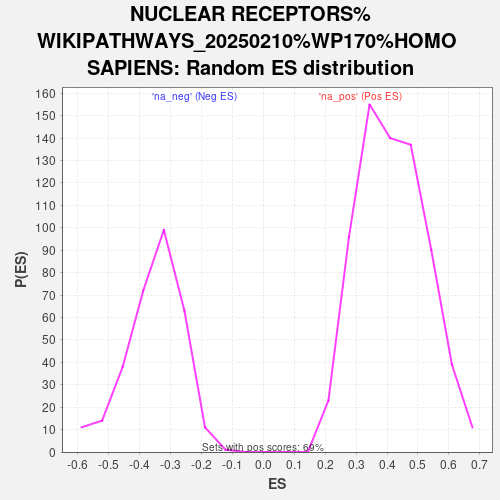

| | | Dataset | CD_deg |
| Phenotype | NoPhenotypeAvailable |
| Upregulated in class | na_neg |
| GeneSet | NUCLEAR RECEPTORS%WIKIPATHWAYS_20250210%WP170%HOMO SAPIENS |
| Enrichment Score (ES) | -0.74424475 |
| Normalized Enrichment Score (NES) | -2.1113167 |
| Nominal p-value | 0.0 |
| FDR q-value | 0.007971403 |
| FWER p-Value | 0.105 |
Table: GSEA Results Summary
 Fig 1: Enrichment plot: NUCLEAR RECEPTORS%WIKIPATHWAYS_20250210%WP170%HOMO SAPIENS
Fig 1: Enrichment plot: NUCLEAR RECEPTORS%WIKIPATHWAYS_20250210%WP170%HOMO SAPIENS
Profile of the Running ES Score & Positions of GeneSet Members on the Rank Ordered List
| SYMBOL | RANK IN GENE LIST | RANK METRIC SCORE | RUNNING ES | CORE ENRICHMENT | | 1 | RARB | 6100 | 1.052 | -0.3442 | No |
| 2 | NR1H3 | 7676 | 0.540 | -0.4259 | No |
| 3 | RORA | 8534 | 0.327 | -0.4694 | No |
| 4 | NR1D2 | 11707 | -0.320 | -0.6544 | No |
| 5 | NR1H2 | 11751 | -0.331 | -0.6482 | No |
| 6 | NR3C1 | 12217 | -0.474 | -0.6640 | No |
| 7 | PGR | 12607 | -0.627 | -0.6710 | No |
| 8 | RXRB | 13198 | -0.940 | -0.6820 | No |
| 9 | NR2F6 | 13535 | -1.189 | -0.6709 | No |
| 10 | ESRRA | 14739 | -2.305 | -0.6829 | Yes |
| 11 | PPARG | 14752 | -2.317 | -0.6219 | Yes |
| 12 | RXRG | 15173 | -2.942 | -0.5693 | Yes |
| 13 | NR5A2 | 15516 | -3.510 | -0.4967 | Yes |
| 14 | RARA | 15910 | -4.499 | -0.4009 | Yes |
| 15 | RORC | 15948 | -4.611 | -0.2805 | Yes |
| 16 | NR1I3 | 16059 | -4.994 | -0.1542 | Yes |
| 17 | RXRA | 16311 | -6.590 | 0.0059 | Yes |
Table: GSEA details [plain text format]

Fig 2: NUCLEAR RECEPTORS%WIKIPATHWAYS_20250210%WP170%HOMO SAPIENS: Random ES distribution
Gene set null distribution of ES for NUCLEAR RECEPTORS%WIKIPATHWAYS_20250210%WP170%HOMO SAPIENS